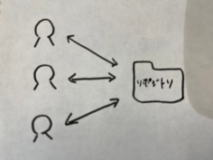
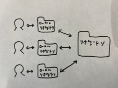
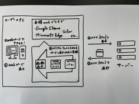

第一回のまとめ
Gitについて
Gitは、分散型バージョン管理システムの一つであり、ソフトウェア開発やプロジェクト管理において、ファイルやコードの変更履歴を管理するためのツールです。
特徴を端的に説明するならば
・オフラインでもプログラミングの編集などができる
・その変更履歴も管理できる
ということが挙げられます。
Gitはなぜ生まれた？
・ファイル編集で困っていた
・チーム作業でも困っていた
⇒これを解決するために生まれたのがGit
Gitの特徴
今までの管理システム

→利用者が増えると上記のように管理が大変
Gitを使った管理システム

Gitの最大の特徴は、「分散型」と言われるとおり、自分のパソコンに全ての変更履歴を含む完全なフォルダの複製を作成できる
→元フォルダのコピー(ローカルリポジトリ)を手元においておけば、自由に編集が可能
Gitにできること
・ファイルの変更履歴が管理できる
・過去のファイルに戻せる
・なんでも管理できる
・チームで共有できる
HTMLについて
HTMLとは
.png)
・HTMLは「HyperText Markup Language」の略称
それぞれの意味は以下の通り
.png)
⇒つまり、様々なデータのコンピュータが読み取れるようにタグ付けする言語
HTMLはプログラミング用語ではない！
・HTMLは「マークアップ言語」である為、プログラミング言語ではない
それぞれの違いは以下の通り
- マークアップ言語：テキストにタグづけをしてコンピュータに認識させる言語
- プログラミング言語：コンピュータにデータ処理の命令をするための言語
→マークアップ言語は、文章や画像などにタグ付けしてコンピュータに認識させる言語
HTMLの仕組み

HTMLファイルがWebページで表示される仕組み
ただしHTMLファイルは「タグのついた文字データ」に過ぎないため、これを私たちが普段見ているようなWebページとして表示させる必要がある
→その役割を担っているのが、Webブラウザ
Webブラウザは「HTMLパーサー」や「HTMLレンダリングエンジン」といった機能を利用して、HTMLファイルをWebページとして表示させる
HTMLにできること
・HTMLメールの作成
・ホームページの作成
⇒・HTMLを使えば、簡単なホームページを作成できる。HTMLファイルを作成してWebブラウザで開けば、Webページをすぐに表示できる
・HTMLは「要素をタグで挟む」というシンプルな文法なので、初心者でも簡単に見出しや段落の作成、画像やリンクの挿入を記述できる
・レンタルサーバーにHTMLファイルをアップロードすれば、簡単にホームページを公開できる
HTMLを構成する3つの要素
・Web上での表現方法を決める「タグ」：Webブラウザに直接表示されず、タイトルや大見出しなどの表現形式をコンピュータに伝達する記号
☆HTMLタグには、テキストデータを開始タグと終了タグで囲む必要があるものや、終了タグを必要としないものもある
・Web上で実際に表示される「要素」：Webブラウザに表示されるタグに囲まれたテキスト
☆タグに囲まれた要素の内容が、Webブラウザに表示される
・タグの性質を決める「属性」：Webブラウザに表示されない要素の追加情報
☆属性を記述する時は、開始タグの直後に半角スペースを空ける
よく使うHTMLタグ
.png)
参考文献
HTMLとは？できることや基本のタグを初心者向けにわかりやすく解説
【絶対理解できる】Gitとは？特徴やできることまとめ！
Gitとは何か？初心者向けに基本概念からわかりやすく解説